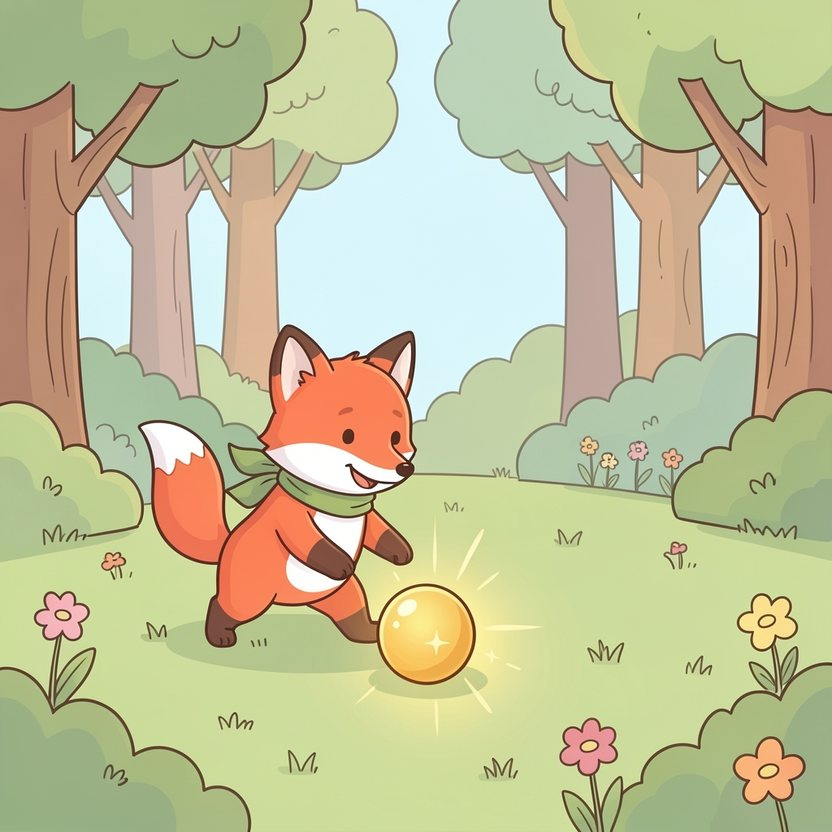

Titistoire › Les Étoiles (3-6 ans)
Filou et le nid de Margot
Une histoire de Filou le renard pour parler de : tendre la patte.

▶ Écouter et regarder l'histoire
Gratuit, sans inscription : la voix lit, le texte suit mot à mot, les images tournent comme dans un album.
Le texte de l'histoire
Dans la forêt des Quatre-Chênes, Filou possède un trésor : une bille dorée. Quand il la fait rouler au soleil, elle scintille comme une petite étoile tombée dans l'herbe.
Mais un matin… frrrt ! Une ombre noire et blanche plonge du ciel. Un coup de bec, et la bille s'est envolée.
« Kia-kia-kia ! » ricane une voix, là-haut dans les branches. C'est Margot la pie. Tout ce qui brille, elle le chipe. Et tout ce qu'elle chipe, elle ne le rend jamais.
Filou trépigne, furieux. Rouge jusqu'au bout de la queue, ce qui n'est pas facile pour un renard déjà roux. « Elle va voir, cette voleuse ! »
Du bout d'un bâton, il trace un plan dans la terre. Une corde. Un panier. Un seau de boue. Et pour l'attirer : une cuillère bien brillante. « Elle se pose, le panier tombe, et splatch ! Facile ! »
« Et après ? » demande Noisette l'écureuil, du haut de sa souche. « Après, elle sera crottée de boue du bec à la queue, et tout le monde rira d'elle ! » Noisette ne répond rien. Elle se gratte seulement l'oreille.
Pour bien poser son piège, il faut savoir où niche Margot. Le soir venu, Filou escalade le plus haut pin de la forêt, à pas de velours, sans faire craquer la moindre branche.
Tout là-haut trône un nid énorme. Et dans ce nid… des boutons, des clés, des cuillères, tout un bric-à-brac qui étincelle ! On se croirait dans une caverne de pirates.
Au beau milieu, posée sur un coussin de mousse : sa bille dorée. Filou tend la patte… et se fige, l'oreille dressée. Margot parle. Mais à qui ?
« Bonsoir, madame Cuillère. Vous avez passé une bonne journée ? Et vous, monsieur Bouton ? Oh, vous ne répondez jamais, vous… »
Margot dispose ses trésors en rond, comme des invités autour d'une table. Avec mille précautions, elle leur verse de la rosée dans des coquilles de noix. Personne ne boit.
« Bonne nuit, tout le monde », chuchote Margot. Elle se pelotonne, la tête sous l'aile, toute seule au milieu de ses trésors. Et Filou entend un tout petit soupir, qui ne ricane pas du tout.
Filou redescend sans sa bille. Au pied du pin, son piège l'attend sous la lune : la corde, le panier, le seau de boue. Il le contemple longtemps.
Assis dans l'herbe, il songe au nid qui brille. Aux invités qui ne répondent jamais. « Elle a tout… pense-t-il. Et elle n'a personne. »
Alors Filou fait une chose bien étrange. Le seau, il le renverse, floc ! La corde, il l'enroule. Et il ne garde que le panier.
Le lendemain, au pied du grand pin, une nappe est étalée dans l'herbe. Dessus : des myrtilles, un gâteau aux noisettes qui sent bon, et trois coquilles de noix pleines de sirop.
« C'est un piège ? » se méfie Margot du haut de sa branche. « C'en était un, avoue Filou. Maintenant, c'est un goûter. Tu viens ? »
Margot se dandine d'une patte sur l'autre. Personne ne l'a jamais invitée nulle part. Comment fait-on, d'ailleurs ? Elle descend d'une branche. Puis d'une autre.
Margot picore le gâteau du bout du bec. Puis elle raconte comment, vue d'en haut, la forêt ressemble à un énorme brocoli. Noisette rit. Filou rit. Et Margot rit, « kia-kia », mais plus du tout pareil.
La dernière miette avalée, elle s'envole sans un mot. Filou baisse les oreilles. Mais la voilà déjà qui revient à tire-d'aile, quelque chose de brillant dans le bec.
Ploc. La bille dorée roule sur la nappe. « Elle brille moins que je croyais, marmonne Margot en regardant ailleurs. C'est mieux quand quelqu'un répond. »
Depuis, chaque après-midi, on joue aux billes dans la clairière. Margot triche un peu. Filou aussi. Noisette compte les points sur ses doigts, très sérieusement.
Tout là-haut, à la cime du grand pin, il y a toujours un nid qui brille. Mais le soir, bien souvent, il est vide.
C'est que Margot rentre tard, maintenant, parmi les lucioles. Elle a des amis à raccompagner.